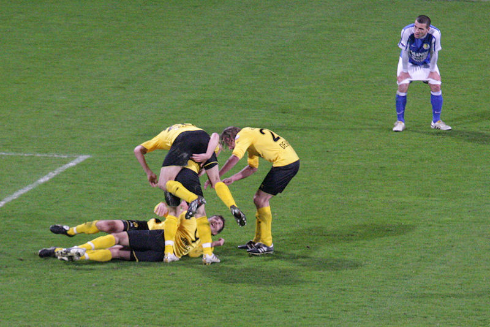
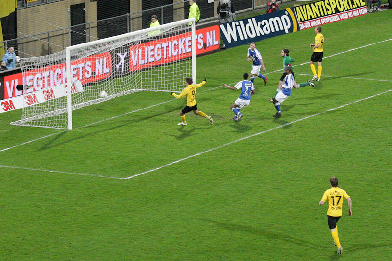

Geniet er van, zo lang het kan...
De sfeermakers op oost zijn goed bezig!

Na een foute pass van Delorge zegt Benschop dankjewel: 0-1, (7').
De gelijkmaker wordt voorkomen door een knappe redding op de lijn met het
hoofd van een Mandemaker.
Skoubo kopt binnen: 1-1, (23').

Morten Skoubo.
Kopbal van Delorge...
... komt bij Skoubo terecht die de bal doorkopt, achter Levita: 2-1, (34').
Er is vooralsnog geen sprake van een "walk-over". Hier blijft Tyton nog even
aan de lat hangen na een prima save.
Bodor in duel met Metaj.
Marcel de Jong.
Levita krijgt een bal niet onder controle waarna Junker er meteen bij is om
te scoren: 3-1, (62').
De opgebloeide spits spoedt zich naar de left lower west-side om de vreugde
te delen met de fans achter het spandoek "one to go".
Junker krijgt de bal op een presenteerblaadje van Levito. Danke, bitte: 4-1,
(69').

Feest bij velen en ontzetting bij een enkeling.
Van Veldhoven bracht drie wissels. Achtereenvolgens De Wree (Saeijs),
Secerovic (Skoubo) en Ax.Stankov (Junker). Op de foto, Secerovic.
Janssen ontdoet zich van Levita en passt op Junker.

Junker scoort: 5-1, (81').
Schot van De Ceulaer belandt op de paal.
Voor degenen die Chris de Wree niet meer kennen; bovenin rechts.
Alexander Stankov. Vorig seizoen speelde hij mee in de slotfase van de
allesbeslissende wedstrijd tegen SC Cambuur.
West-side na het laatste fluitsignaal.
Bedankjes aan alle fan-tribunes.
Tyton weet inmiddels hoe het moet...
Na het leiden van de Humba loopt hij voorop in de polonaise. Deze is immers
gebaseerd op een Poolse dans!!!
Nog even doorsparen voor echte Burberry's.
De Kickoff werd bezocht door Hadouir en...
Tyton.